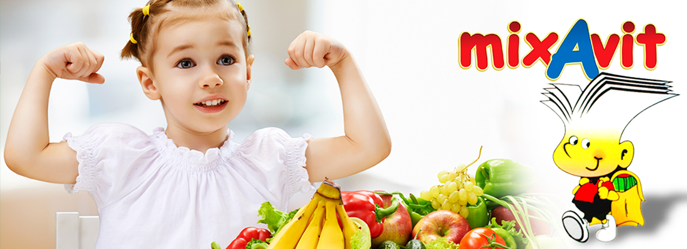

-

- 
-

-


Статьи о медицине
Очень непросто, обеспечить ребенку питание, которое полностью обеспечивало бы его организм необходимыми витаминами и минеральными веществами.
Причин этому несколько: детские капризы, отказ от нелюбимой, хотя и полезной пищи, недоступность некоторых продуктов питания, недостаточная насыщенность продуктов витаминами из-за выращивания в искусственных условиях.
Именно поэтому большинство детей нуждаются в дополнительном приеме специально разработанных витаминных комплексов. А в возрасте 6-8 лет, когда у ребенка начинается школьная жизнь с повышенными нагрузками, актуальность детских витаминов для ума многократно возрастает.
О том, что детям необходимы витамины, сегодня знают абсолютно все. Сложно переоценить их влияние на нормальное развитие и функционирование каждого органа и системы. Крепкие кости, красивая кожа, хорошая память, сопротивляемость заболеваниям, высокий интеллект – это лишь малая часть того результата, который оказывает на детский организм употребление достаточного количества витаминов! А вот недостаток их приводит к нарушениям не только физического, но и умственного развития.
Ребенок, который получает возрастные дозы витаминов для ума:
• отличается более высоким уровнем интеллекта;
• лучше усваивает и запоминает учебный материал;
• легче справляется с заданиями;
• умеет концентрировать внимание.
Мозг таких детей активнее, чем у их сверстников, следовательно, учеба дается им намного легче, они достигают более высоких результатов.
КАЛЬВИТАЛИС
Мультивитаминли сироп кальций билан, алкоголь сақламайди

Кальвиталис сиропининг таркиби нималарда иборат?
Ҳар бир чой қошиқ (5 мл) сироп сақлайди:
Фаол моддалар:
Кальций лактат-глюконати: 40 мг
А витамини: 1200 ХБ
D3 витамини: 100 ХБ
В1 витамини гидрохлориди: 1 мг
В2 витамини 5-натрий фосфати: 1 мг
В6 витамини гидрохлориди: 0,5 мг
Никотинамид: 5 мг
Декспантенол: 2 мл
С витамини: 50 мг
В витамини ацетати: 1 мг
Ёрдамчи моддаоари: натрий бензоати, калий сорбати, лимон кислотаси, натрий цитрати, натрий EDTA,
натрий сахаринати, ксантин қатрони, полиоксилгидрогенланган канакунжут мойи,
сахароза, хушбўйлар (апельсин, мандарин, бошқа мевалар), тозаланган сув.
Кальвиталис сиропи ҳақида нимани билан керак?
Кальвиталис сиропи – бу кальций ва 9 витаминларни сақловчи, улар айниқса ўсиш вақтида муҳим, яхши мувозанатланган ва ўринли тузилган препарат. У ҳаётий кучлари ва соғлиқни тутиб туриш учун, ҳамда касалликларга қаршилик кўрсатиш учун бу зарур компонентларга, организмнинг ҳар кунли эҳтиёжини таъминлайди.
Овқат рациони мувозанатланган соғлом одамлар кальций ва бу витаминларнинг етарли миқдорда оладилар. Бироқ агарда организмда бу моддаларнинг етишмовчилиги бўлса, хужайра фаолиятларини бузилиши пайдо бўлади ва етишмовчиликнинг белгилари намоён бўлади. Бундай ҳолларда, Кальвиталис барча фаолиятларни меъёригача тиклайди ва йўқотилган метаболик мувозанатни қайтаради.
Кальвиталис сиропи қандай ҳолларда қабул қилинади?
Кальвиталис сиропи одатда тонусловчи восита сифатида, ўзини хис қилишни яхшилаш, аъзоларнинг фаолиятини тутиб туриш учун, ҳамда олдини олиш учун қўлланади. Препаратни қуйидаги ҳолларда қўллаш тавсия этилади:
- витамин етишмовчилигини олдини олиш учун;
- иммун тизимини рағбатлантириш учун;
- рахитни, ривожланиш ва ўсиш бузилишларини олдини олиш учун;
- жисмоний ва ақлий ҳолдан тойиш ҳолатларида масалан, диққатни жамлашни ёмонлашиши ёки мактаб чарчоқлигида, олдини олиш чораси сифатида;
- иштаҳани ёмонлашиши ва модда алмашинуви бузилишларини олдини олиш учун;
- касалликдан тикланиш вақтида умумий ўзини хис қилишни яхшилаш учун (тузалиш даврини тезлаштириш);
- терининг табиий фаолиятларини рағбатлантириш учун.
Кальвиталис сиропи қандай дозада қабул қилинади?
4 ёшгача бўлган болалар: 1 чой қошиқдан (5 мл) ҳар куни.
4 ёшдан ошган болалар ва катталар: 2 чой қошиқдан (10 мл) ҳар куни.
Кимга Кальвиталис сиропини қабул қилиш мумкин эмас?
Препаратни унинг компонентларидан бирига аллергияси бўлган шахслар қабул қилмасликлари керак.
D витаминини сақловчи барча препаратлар каби Кальвиталисни гиперкальциемияда (қонда ошиқча кальций) ёки гиперкальциемияда (сийдикда ошиқча кальций) қабул қилиш мумкин эмас.
Қандай бўлмасин эҳтиёткорликлар борми?
Буйракларида тошлари ёки Бек касаллиги (саркоидоз) бўлган пациентларга Кальвиталисни узоқ муддат давомида тавсия этилганидан кейин юқори дозаларни шифокор билан маслаҳатлашмасдан қўллаш мумкин эмас.
Автомобилни ҳайдаш ва механизмларни бошқариш қобилиятига таъсири: Аниқланмаган.
Ҳомиладорлик: Препарат тавсия этилган дозаларда қабул қилинганида муаммолар ҳақида хабар берилмаган.
Ҳар ҳафталик тавсия қилинган дозани оширмаслик керак, чунки ҳомиладорлик вақтида А витаминини ортиқча миқдорларда (5000 ХБ дан ортиқ) қабул қилиш мумкин эмас.
Лактация: Препарат тавсия этилган дозаларда қабул қилинганида муаммолар ҳақида хабар берилмаган.
Қандай бўлмасин нохуш самаралари борми?
Одатда Кальвиталис кўрсатма бўйича қўлланганида яхши ўзлаштирилади.
Бироқ препаратда В2 витамини (рибофлавин) бўлганлиги оқибатида, сийдикни зарарсиз сариқ рангга бўялиши мумкин.
Нотўғри қўллаш ёки дозани ошириб юборилиши ҳақида нималарни билиш керак?
Тавсия этилган дозаларни ошириш, айниқса D витаминини сақловчи бошқа препаратлар бир вақтда қўлланганида, D витамини дозасини ошириб юборилишига олиб келиши мумкин.
Айрим ҳолларда, масалан препаратнинг жуда катта миқдори ичга тушганида, қусишни чақириш ёки фаоллантирилган кўмирни қабул қилиш керак бўлиши мумкин. Зарурати бўлганида симптоматик ва тутиб турувчи чораларни кўриш керак.
Қандай бўлмасин дориларнинг ўзаро таъсири борми?
А витамини ёки D витамини сақловчи препаратларни бир вақтда қабул қилиш, бу витаминларнинг дозасини ошириб юборилишига олиб келиши мукин.
Кальвиталис сиропи қандай ўрамда бор?
Кальвиталис сиропи: Флаконларда 150 ёки 300 мл дан.
* 15-250С ҳароратда сақлансин.
Шифокор рецептисиз берилади
БУ ДОРИ ПРЕПАРАТИ
Дори препарати – бу Сизнинг соғлиғингизга таъсир қилиши мумкин бўлган маҳсулот. Йўриқномасига риоя қилмасдан дорини қўллаш Сизнинг соғлиғингиз учун хавфли.
Шифокорнинг ва фармацевтинг кўрсатмасига қатъий риоя қилинг.
Шифокор ва фармацевт дори воситалари соҳаси ва уларнинг фойдаси ва хавфи бўйича мутахассисдирлар.
Даволаш курсини ўз ҳолингизча тўхтатманг
Барча дори препаратларини болалар олаолмайдиган жойда сақланг.
Соғлиқни Сақлаш Вазирлари Кенгаши, БАА
Фармацевтлар Иттифоқи, БАА
Маълумот учун телефон (қўнғироқ бепул): (971) 800-4994
Союз Фармацевтов, ОАЭ
Ишлаб чиқарилган: Julphar
Gulf Pharmaceutical Industries,
Ras AI Khaimah, U. A. E.
Союз Фармацевтов, ОАЭ
Ишлаб чиқарилган: Julphar
Gulf Pharmaceutical Industries,
Ras AI Khaimah, U. A. E.